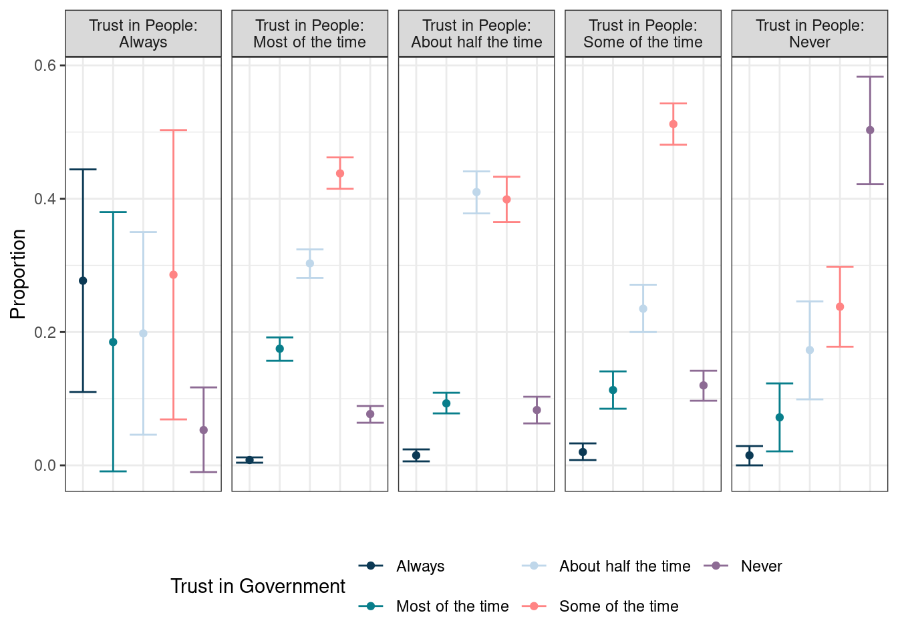

Chapter 6 Statistical testing
For this chapter, here are the libraries and helper functions we will need:
library(tidyverse)
library(survey)
library(srvyr)
library(broom)
library(gt)
library(osfr)
source("helper-fun/helper-functions.R")We will be using data from ANES and RECS. Here is the code to create the design objects for each to use throughout this chapter. For ANES, we need to adjust the weight so it sums to the population instead of the sample (see the ANES documentation and Chapter 4 for more information).
anes_in <- read_osf("anes_2020.rds") %>%
mutate(Weight = Weight / sum(Weight) * targetpop)
anes_des <- anes_in %>%
as_survey_design(
weights = Weight,
strata = Stratum,
ids = VarUnit,
nest = TRUE)For RECS, details are included in the RECS documentation and Chapter 3.
recs_in <-read_osf("recs_2015.rds")
recs_des <- recs_in %>%
as_survey_rep(weights = NWEIGHT,
repweights = starts_with("BRRWT"),
type = "Fay",
rho = 0.5,
mse = TRUE)6.1 Introduction
When analyzing results from a survey, the point estimates described in Chapter 5 help us understand the data at a high level. Still, researchers and the public often want to make comparisons between different groups. These comparisons are calculated through statistical testing.
The general idea of statistical testing is the same for data obtained through surveys and data obtained through other methods, where we compare the point estimates and variance estimates of each statistic to see if statistically significant differences exist. However, statistical testing for complex surveys involves additional considerations due to the need to account for the sampling design in order to obtain accurate variance estimates.
The functions in the {survey} packages allow for the correct estimation of the variances. This chapter will cover the following statistical tests with survey data and functions:
- Comparison of proportions
svyttest() - Comparison of means
svyttest() - Goodness of fit tests
svygofchisq() - Tests of independence
svychisq() - Tests of homogeneity
svychisq()
Up to this point, we’ve shown functions that use wrappers from the {srvyr} package. This means that the functions work with tidyverse syntax. However, the functions in this chapter do not have wrappers in the {srvyr} package and are instead used directly from the {survey} package. Therefore, the design object is not the first argument and to use these functions with the magrittr pipe %>% and tidyverse syntax, we will need to use dot (.) notation.
Functions that work with the magrittr pipe %>% have the data as the first argument. When we run a function with the pipe, it automatically places anything to the left of the pipe into the first argument of the function to the right of the pipe. For example, if we wanted to take the mtcars data and filter to cars with six cylinders, we can write the code in at least four different ways:
filter(mtcars, cyl == 6)mtcars %>% filter(cyl == 6)mtcars %>% filter(., cyl == 6)mtcars %>% filter(.data = ., cyl == 6)
Each of these lines of code will produce the same output since the argument that takes the data is in the first spot in filter(). The first two are probably familiar to those who have worked with the tidyverse. The third option functions the same way as the second one but is explicit that mtcars goes into the first argument, and the fourth option indicates that mtcars is going into the named argument of .data. Here we’re telling R to take what’s on the left side of the pipe (mtcars) and pipe it into the spot with the dot (.)—the first argument.
In functions that are not part of the tidyverse, the data argument may not be in the first spot. For example, in svyttest(), the data argument is in the second spot, which means we need to place the dot (.) in the second spot and not the first. For example:
svydata_des %>%
svyttest(x ~ y, .)By default, the pipe places the left-hand object in the first argument spot. Placing the dot (.) in the second argument spot indicates that the survey design object svydata_des should be used in the second argument and not the first.
Alternatively, named arguments could be used to place the dot first, as in the following:
svydata_des %>%
svyttest(design = ., x ~ y)6.2 Comparison of Proportions and Means
We use t-tests to compare two proportions or means. T-tests allow us to determine if one proportion or mean is statistically different from the other. They are commonly used to determine if a single estimate differs from a known value (e.g., 0 or 50%) or to compare two group means (e.g., North versus South). Comparing a single estimate to a known value is called a one sample t-test, and we can set up the hypothesis test as follows:
- \(H_0: \mu = 0\) where \(\mu\) is the mean outcome and \(0\) is the value we are comparing it to
- \(H_A: \mu \neq 0\)
For comparing two estimates, this is called a two-sample t-test and we can set up the hypothesis test as follows:
- \(H_0: \mu_1 = \mu_2\) where \(\mu_i\) is the mean outcome for group \(i\)
- \(H_A: \mu_1 \neq \mu_2\)
Two sample t-tests can also be paired or unpaired. If the data come from two different populations (e.g., North versus South), the t-test run will be an unpaired or independent samples t-test. Paired t-tests occur when the data come from the same population. This is commonly seen with data from the same population in two different time periods (e.g., before and after an intervention).
The difference between t-tests with non-survey data and survey data is based on the underlying variance estimation difference. Chapter 3 provides a detailed overview of the math behind the mean and sampling error calculations for various sample designs. The functions in the {survey} package will account for these nuances, provided the design object is correctly defined.
6.2.1 Syntax
When we do not have survey data, we can use the t.test() function from the {stats} package. This function does not allow for weights or the variance structure that need to be accounted for with survey data. Therefore, we need to use the svyttest() function from {survey} when using survey data. Many of the arguments are the same between the two functions, but there are two key differences:
- We need to use the survey design object instead of the original data frame
- We can only use a formula and not separate x and y data
Here is the syntax for the svyttest() function:
svyttest(formula,
design,
na.rm = FALSE,
level = 0.95,
...)Notice that the first argument here is the formula and not the design. This means we must use the dot (.) if we pipe in the survey design object (as described at the beginning of this chapter).
The formula argument can take on a couple of different forms depending on what we are measuring. Here are a few common scenarios:
- One-sample t-test:
- Comparison to 0:
var ~ 0, wherevaris the measure of interest, and0is the value we compare it to. For example, we could test if the proportion of the population that has blue eyes is different from0. - Comparison to a different value:
I(var - value) ~ 0, wherevaris the measure of interest andvalueis what we are comparing to. We need to use theI()function to tell the program to calculate the difference between the variable and the comparison value before testing. For example, we could test if the proportion of the population that has blue eyes is different from25%by usingI(var - 0.25) ~ 0.
- Comparison to 0:
- Two-sample t-test:
- Unpaired:
- 2 level grouping variable:
var ~ groupVar, wherevaris the measure of interest andgroupVaris a variable with two categories. For example, we could test if the proportion of the population that has blue eyes is different for children aged 5-10 years old compared to children under 5 years old. - 3+ level grouping variable:
var ~ I(groupVar == level), wherevaris the measure of interest,groupVaris the categorical variable, andlevelis the category level to isolate. Again, we need to use theI()function to tell the program to isolate the category before doing the comparison across groups. For example, we could test if the test scores in one classroom differed from all other classrooms.
- 2 level grouping variable:
- Paired:
I(var_1 - var_2) ~ 0, wherevar_1is the first variable of interest andvar_2is the second variable of interest. We again will have to use theI()function to have the program calculate the difference between the two variables before comparing it against0. For example, we could test if test scores on a subject differed between the start and the end of a course.
- Unpaired:
In R, I() is a special function that isolates its content from R’s parsing code. It is often referred to as the “as-is” operator. When we wrap an expression inside I(), we can include variables or expressions that should be taken “as-is”, without any variable name expansion or other interpretation, allowing the standard R operators to work as they would if we used them outside of a formula.
Additionally, the na.rm argument defaults to FALSE, which means if any data is missing, the t-test will not compute. Throughout this chapter we will always set na.rm = TRUE, but before analyzing the survey data, review the notes provided in Chapter 4 to better understand how to handle missing data. Finally, the level argument is \(1-\alpha\), or the amount of type 1 error. The default is \(0.95\).
Let’s walk through a few examples using the ANES and RECS data.
6.2.2 Examples
Example 1: One-sample t-test
RECS asks respondents to indicate what temperature they set their house to during the summer at night. In our data, we’ve called this variable SummerTempNight. If we want to see if the U.S. household sets their temperature at a value different from 68\(^\circ\)F, we could set up the hypothesis as follows:
- \(H_0: \mu = 68\) where \(\mu\) is the average temperature U.S. households set their thermostat to in the summer at night
- \(H_A: \mu \neq 68\)
To conduct this in R, we use svyttest() with I() function in the formula argument:
ttest_ex1 <- recs_des %>%
svyttest(
formula = I(SummerTempNight - 68) ~ 0,
design = .,
na.rm = TRUE
)
ttest_ex1##
## Design-based one-sample t-test
##
## data: I(SummerTempNight - 68) ~ 0
## t = 41, df = 94, p-value <2e-16
## alternative hypothesis: true mean is not equal to 0
## 95 percent confidence interval:
## 3.425 3.773
## sample estimates:
## mean
## 3.599To pull out specific output, we can use R’s built-in $ operator. For instance, to obtain the estimate \(\mu - 68\), we run ttest_ex1$estimate.
If we want the average, we take our t-test estimate and add it to 68:
ttest_ex1$estimate + 68## mean
## 71.6Or, we can do the following:
recs_des %>%
summarize(mu = survey_mean(SummerTempNight, na.rm = TRUE))## # A tibble: 1 × 2
## mu mu_se
## <dbl> <dbl>
## 1 71.6 0.0878The result is the same in both methods, so we see that the average temperature U.S. households set their thermostat to in the summer at night is 71.6\(F. Looking at the output from `svyttest()`, the t-statistic is 41, and the p-value is 8.67\times 10^{-62}, indicating that the average is statistically different from 68\)$F at an \(\alpha\) level of \(0.05\).
Example 2: One-sample t-test
ANES asked respondents if they voted for president in the 2020 election. In our data, we call this variable VotedPres2020. Let’s look at the proportion of the U.S. voting-eligible population that voted for president in 2020 using the survey_prop() function we learned in Chapter 5.
voteprop <- anes_des %>%
group_by(VotedPres2020) %>%
summarize(p = survey_prop())
voteprop## # A tibble: 3 × 3
## VotedPres2020 p p_se
## <fct> <dbl> <dbl>
## 1 Yes 0.772 0.00757
## 2 No 0.227 0.00763
## 3 <NA> 0.00113 0.000464Based on this, 77.2% of the U.S. voting-eligible population voted for president in 2020. If we wanted to know how this compares to another country, we could use svyttest(). For example, if we know that the voter turnout in Germany in the 2017 general election was 76.2%, we could set up our hypothesis as follows:
- \(H_0: p = 0.762\) where \(p\) is the proportion of the U.S. voting-eligible population that voted for president in 2020
- \(H_A: p \neq 0.762\)
To conduct this in R, we use the svyttest() function. Note that because VotedPres2020 is a factor, we need to specify our desired level within I() before nesting it in another I() to conduct the t-test. In this case, we want to isolate those who voted for president in 2020.
ttest_ex2 <- anes_des %>%
svyttest(formula = I(I(VotedPres2020 == "Yes") - 0.762) ~ 0,
design = .,
na.rm = TRUE)
ttest_ex2##
## Design-based one-sample t-test
##
## data: I(I(VotedPres2020 == "Yes") - 0.762) ~ 0
## t = 1.4, df = 50, p-value = 0.2
## alternative hypothesis: true mean is not equal to 0
## 95 percent confidence interval:
## -0.004729 0.025899
## sample estimates:
## mean
## 0.01058The output from the svyttest() function can be a bit hard to read. Using the {broom} package from tidymodels, a collection of packages for modeling using the tidyverse principles, we can clean up the output into a tibble to more easily understand what the test is telling us.
broom::tidy(ttest_ex2)## # A tibble: 1 × 8
## estimate statistic p.value parameter conf.low conf.high method
## <dbl> <dbl> <dbl> <dbl> <dbl> <dbl> <chr>
## 1 0.0106 1.39 0.171 50 -0.00473 0.0259 Design-based …
## # ℹ 1 more variable: alternative <chr>The estimate differs from example one in that the estimate is not displaying \(\mu - 0.762\) but rather \(\mu\), or the difference between the U.S. proportion and the German proportion we are comparing to. We can see that there is a difference of 360 percentage points. Additionally, the t-statistic value in the statistic column is 41, and the p-value is 8.67^{-62}. These results indicate that the U.S. and Germany have similar voter turnout.
Example 3: Unpaired two-sample t-test
Two additional variables in the RECS data are the electric bill cost (DOLLAREL) and whether the house used AC or not (ACUsed). If we want to know if the U.S. households that used AC had higher electrical bills compared to those that did not, we could set up the hypothesis as follows:
- \(H_0: \mu_{AC} = \mu_{noAC}\) where \(\mu_{AC}\) is the electrical bill cost for U.S. households that used AC and \(\mu_{noAC}\) is the electrical bill cost for U.S. households that did not use AC
- \(H_A: \mu_{AC} \neq \mu_{noAC}\)
Let’s take a quick look at the data to see the format the data are in:
recs_des %>%
group_by(ACUsed) %>%
summarize(mean = survey_mean(DOLLAREL, na.rm = TRUE))## # A tibble: 2 × 3
## ACUsed mean mean_se
## <lgl> <dbl> <dbl>
## 1 FALSE 972. 25.8
## 2 TRUE 1435. 15.8To conduct this in R, we use svyttest():
ttest_ex3 <- recs_des %>%
svyttest(formula = DOLLAREL ~ ACUsed,
design = .,
na.rm = TRUE)
broom::tidy(ttest_ex3)## # A tibble: 1 × 8
## estimate statistic p.value parameter conf.low conf.high method
## <dbl> <dbl> <dbl> <dbl> <dbl> <dbl> <chr>
## 1 463. 14.8 3.08e-26 94 401. 525. Design-based…
## # ℹ 1 more variable: alternative <chr>The results indicate that the difference in electrical bills for those that used AC and those that did not is, on average, $462.87. The difference appears to be statistically significant as the t-statistic is 14.772 and the p-value is 3.08^{-26}. Households that used AC spent on average $462.90 more in 2015.
Example 4: Paired two-sample t-test
To conduct a paired t-test that looks at differences at two time points, we use the same I() notation we’ve been using. For example, let’s say we want to test whether the temperature that U.S. households set their thermostat to differs depending on the season (comparing summer and winter temperatures). We could set up the hypothesis as follows:
- \(H_0: \mu_{summer} = \mu_{winter}\) where \(\mu_{summer}\) is the temperature that U.S. households set their thermostat to during summer nights, and \(\mu_{winter}\) is the temperature that U.S. households set their thermostat to during winter nights
- \(H_A: \mu_{summer} \neq \mu_{winter}\)
To conduct this in R, we use svyttest() and I():
ttest_ex4 <- recs_des %>%
svyttest(
design = .,
formula = I(SummerTempNight - WinterTempNight) ~ 0,
na.rm = TRUE
)
broom::tidy(ttest_ex4)## # A tibble: 1 × 8
## estimate statistic p.value parameter conf.low conf.high method
## <dbl> <dbl> <dbl> <dbl> <dbl> <dbl> <chr>
## 1 3.21 29.1 8.83e-49 94 3.00 3.43 Design-based…
## # ℹ 1 more variable: alternative <chr>U.S. households set their thermostat on average 3.2\(^\circ\)F warmer in summer nights than winter nights, which is statistically significant (t = 29.1, p-value = 8.83^{-49}).
6.3 Chi-Square Tests
Chi-square tests (\(\chi^2\)) allow us to examine multiple proportions using a goodness-of-fit test, a test of independence, or a test of homogeneity. All three of these tests have the same \(\chi^2\) distributions but with slightly different underlying assumptions.
First, goodness-of-fit tests are used when comparing observed data to expected data. For example, this could be used to determine if respondent demographics (the observed data) match known population information (the expected data). In this case, we can set up the hypothesis test as follows:
- \(H_0: p_1 = \pi_1, ~ p_2 = \pi_2, ~ ..., ~ p_k = \pi_k\) where \(p_i\) is the observed proportion for category \(i\), \(\pi_i\) is expected proportion for category \(i\), and \(k\) is the number of categories
- \(H_A:\) at least one level of \(p_i\) does not match \(\pi_i\)
Second, tests of independence are used when comparing two types of observed data to see if there is a relationship. For example, this could be used to determine if the proportion of respondents who voted for each political party in the presidential election matches the proportion of respondents who voted for each political party in a local election. In this case, we can set up the hypothesis test as follows:
- \(H_0:\) The two variables/factors are independent
- \(H_A:\) The two variables/factors are not independent
Third, tests of homogeneity are used to compare two distributions to see if they match. For example, this could be used to determine if the highest education achieved is the same for both men and women. In this case, we can set up the hypothesis test as follows:
- \(H_0: p_{1a} = p_{1b}, ~ p_{2a} = p_{2b}, ~ ..., ~ p_{ka} = p_{kb}\) where \(p_{ia}\) is the observed proportion of category \(i\) for subgroup \(a\), \(p_{ib}\) is the observed proportion of category \(i\) for subgroup \(a\) and \(k\) is the number of categories
- \(H_A:\) at least one category of \(p_{ia}\) does not match \(p_{ib}\)
As with t-tests, the difference between using \(\chi^2\) tests with non-survey data and survey data is based on the underlying variance estimation. The functions in the {survey} package will account for these nuances, provided the design object is correctly defined. For basic variance estimation formulas for different survey design types, refer to Chapter 3.
6.3.1 Syntax
When we do not have survey data, we may be able to use the chisq.test() function. However, this function does not allow for weights or the variance structure to be accounted for with survey data. Therefore, when using survey data, we need to use one of two functions:
svygofchisq(): For goodness of fit testssvychisq(): For tests of independence and homogeneity
The non-survey data function of chisq.test() requires either a single set of counts and given proportions (for goodness of fit tests) or two sets of counts for tests of independence and homogeneity. The functions we use with survey data require respondent-level data and formulas instead of counts. This ensures that the variances are correctly calculated.
First, the function for the goodness of fit tests is svygofchisq():
svygofchisq(formula,
p,
design,
na.rm = TRUE,
...)In this function, the first argument is the formula, the second is p, which is the expected proportions, and the third is the design. Therefore, we again must use the dot (.) notation if we pipe in the survey design object or explicitly name the arguments (as described at the beginning of this chapter). For the goodness of fit tests, the formula will be a single variable formula = ~var as we compare the observed data from this variable to the expected data. The expected probabilities are then entered in the p argument and need to be a vector of the same length as the number of categories in the variable. For example, if we want to know if the proportion of males and females match a distribution of 30/70, then the sex variable (with two categories) would be used formula = ~SEX, and the proportions would be included as p = c(.3, .7). It is important to note that the variable entered into the formula should be formatted as either a factor or a character. The examples below provide more detail and tips on how to make sure the levels match up correctly.
The function for tests of independence and homogeneity (svychisq()) is similar to the goodness of fit function in that the formula argument is first. However, instead of an argument for the expected proportions, the svychisq() function has an argument to select the statistic(s) used for the test:
svychisq(
formula,
design,
statistic = c("F", "Chisq", "Wald", "adjWald",
"lincom", "saddlepoint"),
na.rm = TRUE,
...
)There are six statistics that are accepted in this formula. For tests of homogeneity (when comparing cross-tabulations), the F or Chisq statistics should be used.17 The F statistic is the default and uses the Rao-Scott second-order correction. This correction is designed to assist with complicated sampling designs (i.e., those other than a simple random sample) (CITE)18. The Chisq statistic is an adjusted version of the Pearson \(\chi^2\) statistic. The version of this statistic in the svychisq() function compares the design effect estimate from the provided survey data to what the \(\chi^2\) distribution would have been if the data came from a simple random sampling.
For tests of independence, the Wald and adjWald are recommended as they provide a better adjustment for variable comparisons (Lumley (2010)). If the data has a small number of primary sampling units (PSUs) compared to the degrees of freedom, then the adjWald statistic should be used to account for this. The lincom and saddlepoint statistics are available for more complicated data structures.
The formula argument will always be one-sided, unlike the svyttest() function. The two variables of interest should be included with a plus sign: formula = ~ var_1 + var_2. As with the svygofchisq() function, the variables entered into the formula should be formatted as either a factor or a character.
Additionally, as with the t-test function, both svygofchisq() and svychisq() have the na.rm argument. This argument defaults to FALSE; however, unlike the t-test function, if any data is missing, the \(\chi^2\) tests will assume that NA is a category and will include it in the calculation. Throughout this chapter, we will always set na.rm = TRUE, but before analyzing the survey data, review the notes provided in Chapter 4 to better understand how to handle missing data.
6.3.2 Examples
Let’s walk through a few examples using the ANES data.
Example 1: Goodness of Fit Test
ANES asked respondents about their highest education level. Based on the data from the 2020 American Community Survey (ACS) 5-year estimates19, the education distribution of those 18+ in the U.S. is as follows: - 11% had less than High School degree - 27% had a High School degree - 29% had some college or associate’s degree - 33% had a bachelor’s degree or higher
If we want to see if the weighted distribution from the ANES 2020 data matches this distribution, we could set up the hypothesis as follows:
- \(H_0: p_1 = 0.11, ~ p_2 = 0.27, ~ p_3 = 0.29, ~ p_4 = 0.33\)
- \(H_A:\) at least one of the education levels does not match between the ANES and the ACS
To conduct this in R, let’s first look at the education variable (Education) we have on the ANES data. Using the survey_mean() function discussed in Chapter 5, we can see the education levels and estimated proportions.
anes_des %>%
group_by(Education) %>%
filter(!is.na(Education)) %>%
summarize(p = survey_mean())## # A tibble: 5 × 3
## Education p p_se
## <fct> <dbl> <dbl>
## 1 Less than HS 0.0805 0.00568
## 2 High school 0.277 0.0102
## 3 Post HS 0.290 0.00713
## 4 Bachelor's 0.226 0.00633
## 5 Graduate 0.126 0.00499Based on this output, we can see that we have different levels than the ACS data provides. Specifically, the education data from ANES has two levels for Bachelor’s Degree or Higher (Bachelor’s and Graduate), so these two categories need to be collapsed into a single category to match the ACS data. For this, we can use the {forcats} package from the tidyverse. The package’s fct_collapse() function creates a new variable. Then we will use the svygofchisq() function to compare the ANES data to the ACS data:
anes_des_educ <- anes_des %>%
mutate(Education2 =
fct_collapse(Education,
"Bachelor or Higher" = c("Bachelor's",
"Graduate")))
chi_ex1 <- anes_des_educ %>%
svygofchisq(
formula = ~ Education2,
p = c(0.11, 0.27, 0.29, 0.33),
design = .,
na.rm = TRUE
)
chi_ex1##
## Design-based chi-squared test for given probabilities
##
## data: ~Education2
## X-squared = 2177472, scale = 1.1e+05, df = 2.3e+00, p-value =
## 9e-05The output from the svygofchisq() indicates that at least one proportion from ANES does not match the ACS data ( \(\chi^2=\) 2.1775^{6}; p-value= 8.74^{-5} ). To get a better idea of the differences, we can use the expected output along with survey_mean() to create a comparison table:
ex1_expected <- tibble(ExpectedCount = chi_ex1$expected) %>%
mutate(
Education = names(chi_ex1$expected),
Education = str_sub(Education, 11, nchar(Education)),
ExpectedProb = ExpectedCount / sum(ExpectedCount)
) %>%
select(Education, Expected = ExpectedProb)
ex1_observed <- anes_des_educ %>%
filter(!is.na(Education2)) %>%
group_by(Education2) %>%
summarize(Observed = survey_mean(vartype = "ci")) %>%
rename(Education = Education2)
ex1_table <- ex1_expected %>%
left_join(ex1_observed, by = "Education") %>%
mutate(Education = factor(
Education,
levels = c("Less than HS", "High school",
"Post HS", "Bachelor or Higher")
))
ex1_table## # A tibble: 4 × 5
## Education Expected Observed Observed_low Observed_upp
## <fct> <dbl> <dbl> <dbl> <dbl>
## 1 Less than HS 0.11 0.0805 0.0691 0.0919
## 2 High school 0.27 0.277 0.257 0.298
## 3 Post HS 0.29 0.290 0.276 0.305
## 4 Bachelor or Higher 0.33 0.352 0.337 0.367This output includes our expected proportions from the ACS that we provided the svygofchisq() function along with the output of the observed proportions and their confidence intervals. From this table, we can see that the “High school” and “Post HS” categories have nearly identical proportions but that the other two categories are slightly different. Looking at the confidence intervals, we can see that the ANES data skews to include fewer people in the “Less than HS” category and more people in the “Bachelor or Higher” category. This may be easier to see in graphical form:
ex1_table %>%
pivot_longer(
cols = c("Expected", "Observed"),
names_to = "Names",
values_to = "Proportion"
) %>%
mutate(
Observed_low = case_when(Names == "Observed" ~ Observed_low),
Observed_upp = case_when(Names == "Observed" ~ Observed_upp)
) %>%
ggplot(aes(x = Education, y = Proportion, color = Names)) +
geom_point(alpha = 0.5) +
geom_errorbar(aes(ymin = Observed_low, ymax = Observed_upp)) +
theme_bw() +
scale_color_manual(name = "Type", values = book_colors[c(4,1)]) +
theme(legend.position = "bottom")FIGURE 6.1: Expected and observed proportions of education, showing the confidence intervals for the expected proportions and whether the observed proportions lie within them. The x-axis has labels ‘Less than HS’, ‘High school’, ‘Post HS’, and ‘Bachelor or Higher’. The only ones where expected proportion is outside of the intervals is ‘Less than HS’ and ‘Bachelor or Higher’.
Example 2: Test of Independence
ANES asked respondents two questions about trust:
- How often can you trust the federal government to do what is right?
- How often can you trust other people?
If we want to see if the distributions of these two questions are similar or not, we can conduct a test of independence. Here is how the hypothesis could be set up:
- \(H_0:\) People’s trust in the federal government and their trust in other people are independent (i.e., not related)
- \(H_A:\) People’s trust in the federal government and their trust in other people are not independent (i.e., they are related)
To conduct this in R, we use the svychisq() function to compare the two variables:
chi_ex2 <- anes_des %>%
svychisq(
formula = ~ TrustGovernment + TrustPeople,
design = .,
statistic = "Wald",
na.rm = TRUE
)
chi_ex2##
## Design-based Wald test of association
##
## data: NextMethod()
## F = 21, ndf = 16, ddf = 51, p-value <2e-16The output from svychisq() indicates that the distribution of people’s trust in the federal government and their trust in other people are not independent, meaning that they are related. Let’s output the distributions in a table to see the relationship. The observed output from the test provides a cross-tabulation of the counts for each category:
chi_ex2$observed## TrustPeople
## TrustGovernment Always Most of the time About half the time
## Always 16.470 25.009 31.848
## Most of the time 11.020 539.377 196.258
## About half the time 11.772 934.858 861.971
## Some of the time 17.007 1353.779 839.863
## Never 3.174 236.785 174.272
## TrustPeople
## TrustGovernment Some of the time Never
## Always 36.854 5.523
## Most of the time 206.556 27.184
## About half the time 428.871 65.024
## Some of the time 932.628 89.596
## Never 217.994 189.307However, as researchers, we often want to know about the proportions and not just the respondent counts from the survey. There are a couple of different ways that we can do this. The first is using the counts from chi_ex2$observed to calculate the proportion. We can then pivot the table to create a cross-tabulation similar to the counts table above. Adding group_by() to the code means that we are obtaining the proportions within each level of that variable. In this case, we are looking at the distribution of TrustGovernment for each level of TrustPeople.
chi_ex2$observed %>% as_tibble() %>%
group_by(TrustPeople) %>%
mutate(prop = round(n / sum(n), 3)) %>%
select(-n) %>%
pivot_wider(names_from = TrustPeople, values_from = prop) %>%
gt(rowname_col = "TrustGovernment") %>%
tab_stubhead(label = "Trust in Government") %>%
tab_spanner(label = "Trust in People",
columns = everything()) %>%
cols_label(`Most of the time` = md("Most of<br />the time"),
`About half the time` = md("About half<br />the time"),
`Some of the time` = md("Some of<br />the time"))| Trust in Government | Trust in People | ||||
|---|---|---|---|---|---|
| Always | Most of the time |
About half the time |
Some of the time |
Never | |
| Always | 0.277 | 0.008 | 0.015 | 0.020 | 0.015 |
| Most of the time | 0.185 | 0.175 | 0.093 | 0.113 | 0.072 |
| About half the time | 0.198 | 0.303 | 0.410 | 0.235 | 0.173 |
| Some of the time | 0.286 | 0.438 | 0.399 | 0.512 | 0.238 |
| Never | 0.053 | 0.077 | 0.083 | 0.120 | 0.503 |
The second option is to use group_by() and survey_mean() functions to calculate the proportions from the ANES design object. A reminder that with more than one variable listed in the group_by() statement, the proportions are within the first variable listed. As mentioned above, we are looking at the distribution of TrustGovernment for each level of TrustPeople.
chi_ex2_obs <- anes_des %>%
filter(!is.na(TrustPeople), !is.na(TrustGovernment)) %>%
group_by(TrustPeople, TrustGovernment) %>%
summarize(Observed = round(survey_mean(vartype = "ci"), 3))
chi_ex2_obs %>%
mutate(prop = paste0(Observed, " (", Observed_low, ", ",
Observed_upp, ")")) %>%
select(TrustGovernment, TrustPeople, prop) %>%
pivot_wider(names_from = TrustPeople, values_from = prop) %>%
gt(rowname_col = "TrustGovernment") %>%
tab_stubhead(label = "Trust in Government") %>%
tab_spanner(label = "Trust in People",
columns = everything()) %>%
tab_options(page.orientation = "landscape")| Trust in Government | Trust in People | ||||
|---|---|---|---|---|---|
| Always | Most of the time | About half the time | Some of the time | Never | |
| Always | 0.277 (0.11, 0.444) | 0.008 (0.004, 0.012) | 0.015 (0.006, 0.024) | 0.02 (0.008, 0.033) | 0.015 (0, 0.029) |
| Most of the time | 0.185 (-0.009, 0.38) | 0.175 (0.157, 0.192) | 0.093 (0.078, 0.109) | 0.113 (0.085, 0.141) | 0.072 (0.021, 0.123) |
| About half the time | 0.198 (0.046, 0.35) | 0.303 (0.281, 0.324) | 0.41 (0.378, 0.441) | 0.235 (0.2, 0.271) | 0.173 (0.099, 0.246) |
| Some of the time | 0.286 (0.069, 0.503) | 0.438 (0.415, 0.462) | 0.399 (0.365, 0.433) | 0.512 (0.481, 0.543) | 0.238 (0.178, 0.298) |
| Never | 0.053 (-0.01, 0.117) | 0.077 (0.064, 0.089) | 0.083 (0.063, 0.103) | 0.12 (0.097, 0.142) | 0.503 (0.422, 0.583) |
Both methods produce the same output as the svychisq() function does account for the survey design. However, calculating the proportions directly from the design object means that we can also obtain the variance information. In this case, the table output displays the survey estimate followed by the confidence intervals. Based on the output, we can see that of those that never trust people, 50.3% also never trust the government, while the proportions of never trusting the government are much lower for each of the other levels of trusting people.
We may find it easier to look at these proportions graphically. We can use ggplot() and facets to provide an overview:
chi_ex2_obs %>%
mutate(TrustPeople=str_c("Trust in People:\n", TrustPeople)) %>%
ggplot(aes(x = TrustGovernment, y = Observed, color = TrustGovernment)) +
facet_wrap( ~ TrustPeople, ncol = 5) +
geom_point() +
geom_errorbar(aes(ymin = Observed_low, ymax = Observed_upp)) +
ylab("Proportion") +
xlab("") +
theme_bw() +
scale_color_manual(name="Trust in Government", values=book_colors) +
theme(axis.text.x = element_blank(),
axis.ticks.x = element_blank(),
legend.position = "bottom")
Example 3: Test of Homogeneity
Researchers and politicians often look at specific demographics each election cycle to understand how each group is leaning or voting towards candidates. The ANES data is post-election, but we can still see if there are differences in how specific demographic groups voted.
If we want to see if there is a difference in how each age group voted for the 2020 candidates, this would be a test of homogeneity, and the hypothesis could be set up as follows:
- \[\begin{align*} H_0: p_{1_{Biden}} &= p_{1_{Trump}} = p_{1_{Other}},\\ p_{2_{Biden}} &= p_{2_{Trump}} = p_{2_{Other}},\\ p_{3_{Biden}} &= p_{3_{Trump}} = p_{3_{Other}},\\ p_{4_{Biden}} &= p_{4_{Trump}} = p_{4_{Other}},\\ p_{5_{Biden}} &= p_{5_{Trump}} = p_{5_{Other}},\\ p_{6_{Biden}} &= p_{6_{Trump}} = p_{6_{Other}} \end{align*}\] where \(p_{i_{Biden}}\) is the observed proportion of each age group (\(i\)) that voted for Biden, \(p_{i_{Trump}}\) is the observed proportion of each age group (\(i\)) that voted for Trump, and \(p_{i_{Other}}\) is the observed proportion of each age group (\(i\)) that voted for another candidate
- \(H_A:\) at least one category of \(p_{i_{Biden}}\) does not match \(p_{i_{Trump}}\) or \(p_{i_{Other}}\)
To conduct this in R, we use the svychisq() function to compare the two variables:
chi_ex3 <- anes_des %>%
filter(VotedPres2020 == "Yes" &
!is.na(VotedPres2020_selection) &
!is.na(AgeGroup)) %>%
svychisq(
formula = ~ AgeGroup + VotedPres2020_selection,
design = .,
statistic = "Chisq",
na.rm = TRUE
)
chi_ex3##
## Pearson's X^2: Rao & Scott adjustment
##
## data: NextMethod()
## X-squared = 169, df = 10, p-value <2e-16The output from svychisq() indicates a difference in how each age group voted in the 2020 election. To get a better idea of the different distributions, let’s output proportions to see the relationship. As we learned in Example 2 above, we can use chi_ex3$observed, or if we want to get the variance information (which is crucial with survey data), we can use survey_mean(). Remember, when we have two variables in group_by(), we obtain the proportions within each level of the variable listed. In this case, we are looking at the distribution of AgeGroup for each level of VotedPres2020_selection.
chi_ex3_obs <- anes_des %>%
filter(VotedPres2020 == "Yes" &
!is.na(VotedPres2020_selection) &
!is.na(AgeGroup)) %>%
group_by(VotedPres2020_selection, AgeGroup) %>%
summarize(Observed = round(survey_mean(vartype = "ci"), 3))
chi_ex3_obs %>%
mutate(prop = paste0(Observed, " (", Observed_low, ", ",
Observed_upp, ")")) %>%
select(AgeGroup, VotedPres2020_selection, prop) %>%
pivot_wider(names_from = VotedPres2020_selection,
values_from = prop) %>%
gt(rowname_col = "AgeGroup") %>%
tab_stubhead(label = "Age Group")| Age Group | Biden | Trump | Other |
|---|---|---|---|
| 18-29 | 0.204 (0.177, 0.231) | 0.114 (0.095, 0.133) | 0.227 (0.15, 0.304) |
| 30-39 | 0.169 (0.153, 0.185) | 0.147 (0.123, 0.17) | 0.306 (0.214, 0.398) |
| 40-49 | 0.163 (0.146, 0.18) | 0.157 (0.136, 0.178) | 0.209 (0.128, 0.29) |
| 50-59 | 0.154 (0.136, 0.173) | 0.234 (0.207, 0.261) | 0.107 (0.041, 0.172) |
| 60-69 | 0.179 (0.16, 0.199) | 0.192 (0.172, 0.213) | 0.102 (0.025, 0.178) |
| 70 or older | 0.13 (0.118, 0.143) | 0.156 (0.139, 0.174) | 0.049 (0, 0.098) |
We can see that the age group distribution was younger for Biden and other candidates and older for Trump. For example, of those that voted for Biden, 20.4% were in the 18-29 age group, compared to only 11.4% of those that voted for Trump were in that age group. On the other side, 23.4% of those that voted for Trump were in the 50-59 age group compared to only 15.4% of those that voted for Biden.
6.4 Exercises
Here are some exercises for practicing conducting t-tests using svyttest():
- Using the RECS data, do more than 50% of U.S. households use AC (
ACUsed)?
ttest_solution1 <- recs_des %>%
svyttest(design = .,
formula = ((ACUsed == TRUE) - 0.5) ~ 0,
na.rm = TRUE)
ttest_solution1##
## Design-based one-sample t-test
##
## data: ((ACUsed == TRUE) - 0.5) ~ 0
## t = 45, df = 94, p-value <2e-16
## alternative hypothesis: true mean is not equal to 0
## 95 percent confidence interval:
## 0.3533 0.3861
## sample estimates:
## mean
## 0.3697- Using the RECS data, does the average temperature that U.S. households set their thermostats to differ between the day and night in the winter (
WinterTempDayandWinterTempNight)?
ttest_solution2 <- recs_des %>%
svyttest(
design = .,
formula = I(WinterTempDay - WinterTempNight) ~ 0,
na.rm = TRUE
)
ttest_solution2##
## Design-based one-sample t-test
##
## data: I(WinterTempDay - WinterTempNight) ~ 0
## t = 31, df = 94, p-value <2e-16
## alternative hypothesis: true mean is not equal to 0
## 95 percent confidence interval:
## 1.787 2.028
## sample estimates:
## mean
## 1.907- Using the ANES data, does the average age (
Age) of those who voted for Biden in 2020 (VotedPres2020_selection) differ from those that voted for another candidate?
ttest_solution3 <- anes_des %>%
svyttest(
design = .,
formula = Age ~ I(VotedPres2020_selection == "Biden"),
na.rm = TRUE
)
ttest_solution3##
## Design-based t-test
##
## data: Age ~ I(VotedPres2020_selection == "Biden")
## t = -6, df = 50, p-value = 2e-07
## alternative hypothesis: true difference in mean is not equal to 0
## 95 percent confidence interval:
## -4.824 -2.395
## sample estimates:
## difference in mean
## -3.61Here are some exercises for practicing conducting chi-squared tests using svygofchisq() and svychisq():
- If you wanted to determine if the political party affiliation differed for males and females, what test would you use?
- Goodness of fit test (
svygofchisq()) - Test of independence (
svychisq()) - Test of homogeneity (
svychisq())
chisq_solution1 <- "c. Test of homogeneity (`svychisq()`)"
chisq_solution1## [1] "c. Test of homogeneity (`svychisq()`)"- In the RECS data, is there a relationship between the type of housing unit (
HousingUnitType) and the year the house was built (YearMade)?
chisq_solution2 <- recs_des %>%
svychisq(
formula = ~ HousingUnitType + YearMade,
design = .,
statistic = "Wald",
na.rm = TRUE
)
chisq_solution2##
## Design-based Wald test of association
##
## data: NextMethod()
## F = 32, ndf = 28, ddf = 95, p-value <2e-16- In the ANES data, is there a difference in the distribution of gender (
Gender) across early voting status in 2020 (EarlyVote2020)?
chisq_solution3 <- anes_des %>%
svychisq(
formula = ~ Gender + EarlyVote2020,
design = .,
statistic = "F",
na.rm = TRUE
)
chisq_solution3##
## Pearson's X^2: Rao & Scott adjustment
##
## data: NextMethod()
## F = 0.27, ndf = 1, ddf = 51, p-value = 0.6References
These two statistics can also be used for goodness of fit tests, if the
svygofchisq()function is not used.↩︎http://www.asasrms.org/Proceedings/y2007/Files/JSM2007-000874.pdf↩︎
Data was pulled from data.census.gov using the S1501 Education Attainment 2020: ACS 5-Year Estimates Subject Tables↩︎